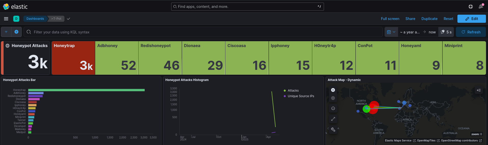

Tpot - HoneyPot
En el proyecto hemos buscado implementar un honeypot para capturar y analizar ataques a un entorno web vulnerable. La información recopilada sobre las técnicas de los atacantes servirá para identificar vulnerabilidades y, con base en ello, desarrollar un servicio web seguro aplicando buenas prácticas de ciberseguridad.
- Detección de patrones de ataque
- Detección de metodos
- Análisis de vulnerabilidades explotadas
